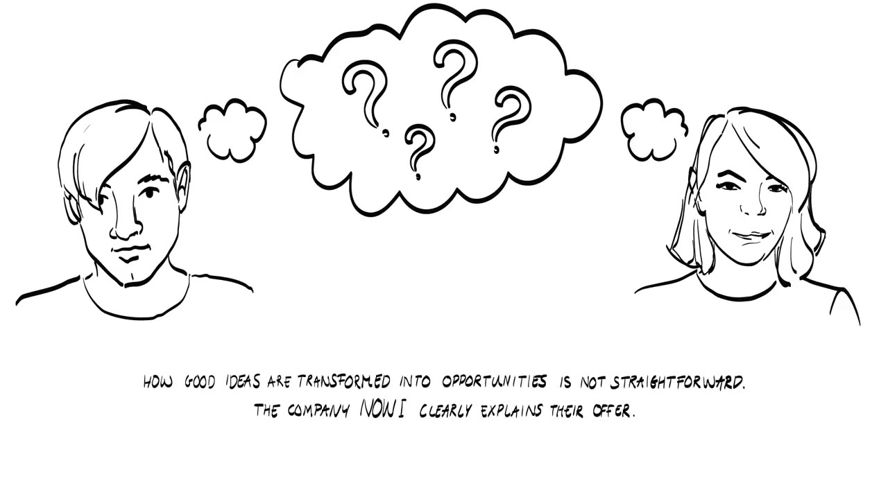
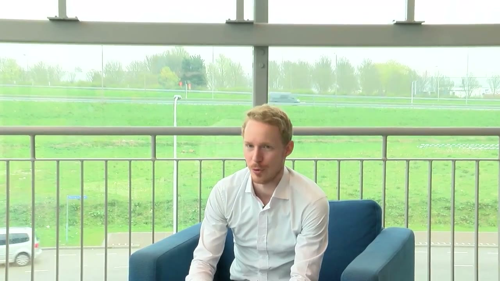
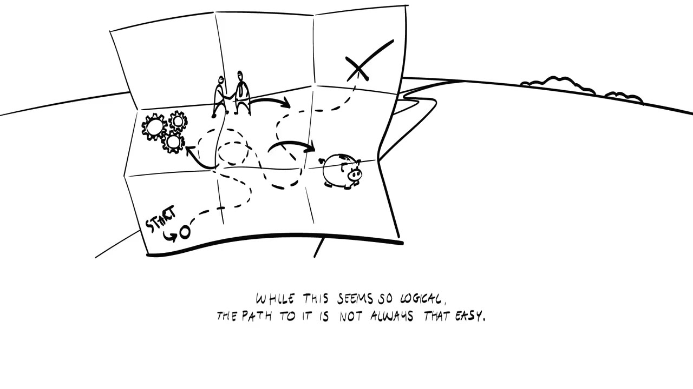
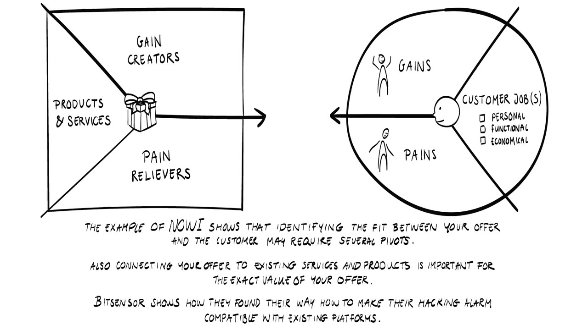
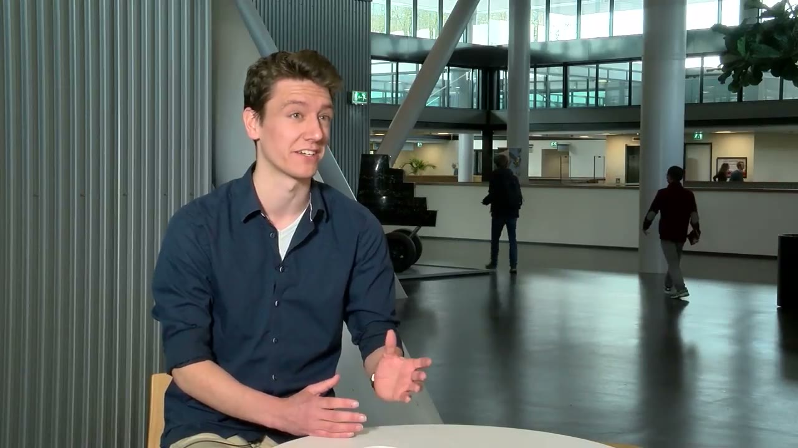
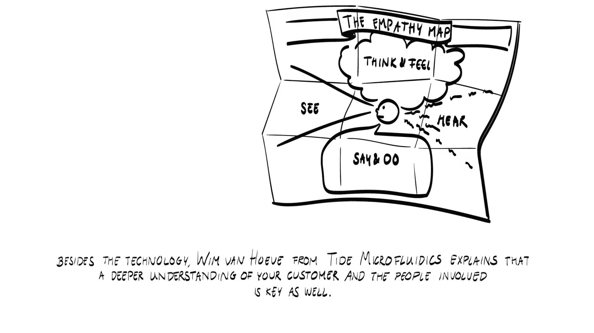
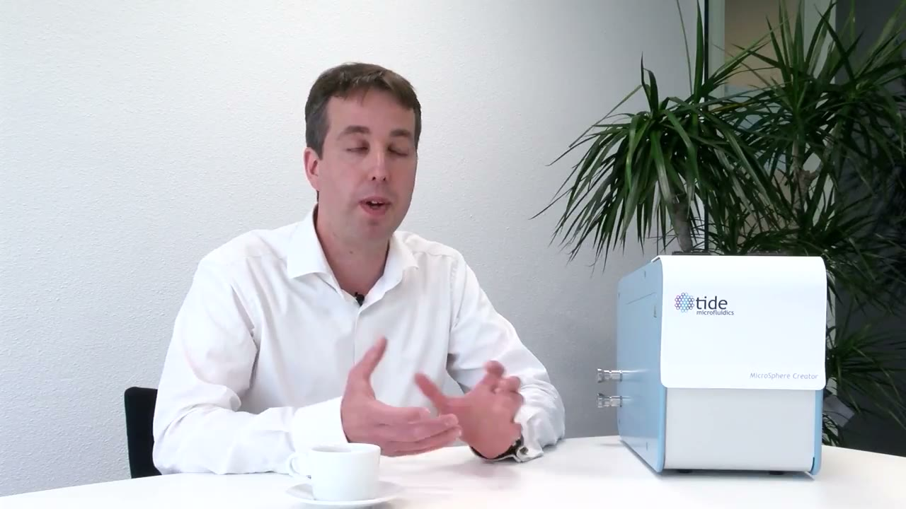
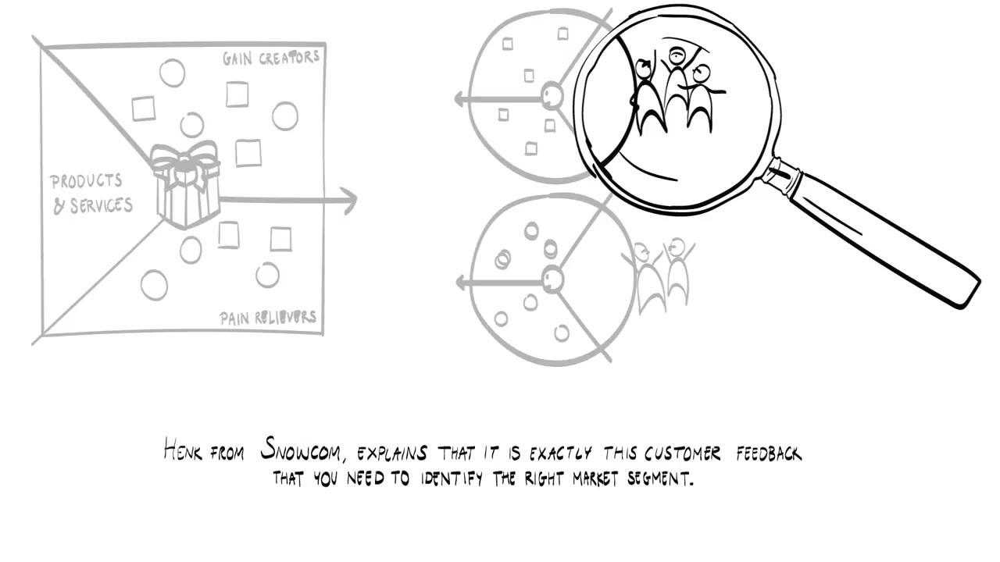
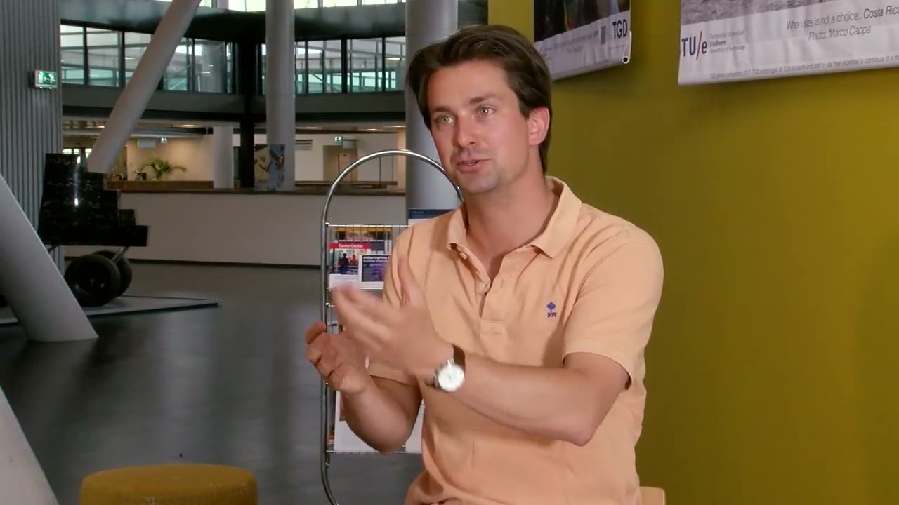

From good idea to good opportunity
How a good idea is transformed into a good opportunity is not straightforward. The video walks through four companies. The speakers from Nowi and Bitsensor are not named on screen, so these notes refer to them by company.
- NowiSensor startup, TU Delft
- BitsensorApplication security startup, TU Eindhoven
- Wim van HoeveTide Microfluidics, TU Twente
- Henk ArntzSnocom, TU Eindhoven


Nowi: a sensor you plug in and forget
Nowi develops sensors that last forever. The way it does this is unusual: the sensors use Wi-Fi, 4G and GSM signals as a power source. They take a little energy from the signals that are all around us and run on that.


A climate sensor made today has a battery in it, or a cable for the power supply. A battery means frequent maintenance. That does not work if you are putting 10,000 sensors into a new office building, or into any kind of Internet of Things solution. By harvesting the signals, Nowi removes the maintenance and gets what it calls a plug and forget sensor, one that simply works forever.
The scale is what turns lifetime into a problem. A new office building easily needs several thousand sensors. A few years ago you would have put in a smoke detector and little else.
If you have to change the battery in a smoke detector once a year it's not really a problem. If you have to do this 5,000 times every year it becomes a problem.
Nowi sees this in buildings and also outdoors.
Nowi: the path to that offer
The offer sounds logical now. The path to it was not that easy. What Nowi does today is not necessarily how it started, and there were some pivots along the way.


A problem on one side
The Internet of Things means a massive number of connected devices, and that creates an energy supply problem. The speaker recalls McKinsey saying 60 billion connected devices in 2025 and Intel saying 200 billion. Whatever the number ends up being, it is enormous.
Nowi saw that many early projects were not fulfilling their promise. Say more temperature sensors can save 10% on a building's energy costs. The business case falls apart if somebody has to visit every six months to change the batteries. The cost of doing that is higher than the savings, so people do not do it. That is where Nowi recognized the need.
Research on the other
At the same time TU Delft had a good 10 or 15 years of academic research on wireless power transfer and energy harvesting methods. It was not obvious from the start that this would be the solution. The team was learning what went on in the electrical engineering research lab, and that shaped their ideas on how to solve the problem.

Still no value proposition
"There are an enormous number of connected devices and something of an energy supply problem" is a very basic idea. It does not give you a market proposition or a value proposition yet. So Nowi talked to a lot of companies in different fields and industries. That showed where the problem is biggest and where people are willing to pay for a solution.
Where is it really a need-to-have solution instead of a nice-to-have solution?
A lot of market research went into this, and it is still going on. Nowi runs a continuous market feedback loop, and the feedback keeps changing the product.
Bitsensor: two beliefs to test first
The narrator sums up Nowi: finding the fit between your offer and the customer may take several pivots. Connecting your offer to existing services and products also matters for finding its exact value. Bitsensor shows how it made its hacking alarm compatible with existing platforms.


Technology for detecting hackers already existed. It was not effective. It generated too many alerts, and it also failed to raise an alert when there really was an attack. Bitsensor had to solve both problems to build something that works. Its answer was an application security tool that does not sit in the network. It works inside the application and sees how the application itself is attacked. The team worked on it and found it hugely effective, and that was the moment it made sense to build a company around the technology.


Several things had to be tested first, because the product went against what everybody believed.
Nobody thought people would install a plugin into their application to do security. Everybody thought it should be on the network. So we need to validate that first.
The second belief was about the cloud. Bitsensor offered its product as a SaaS service, and nobody thought companies wanted security as a cloud solution. Everybody thought it had to be on premise. Bitsensor proved that point as well. Both were needed to solve the problem in a scalable way.
Tide Microfluidics: a demonstration for the users
Besides the technology, a deeper understanding of your customer and the people involved is needed as well. Wim van Hoeve explains how Tide Microfluidics got it: by talking to people in the field. When the first products existed, the team went out to get customers' feedback.


We invited cardiologists, veterinarian researchers and we gave a live action demonstration with our first prototype. And we could see the enthusiasm of these people.
Both sides learned from it. The visitors could see what was being developed. The team could learn how these people would use the product in their clinical practice. That information helped Tide develop the product further.


Snocom: feedback picks the market segment
Henk Arntz explains that this same customer feedback is what you need to identify the right market segment. Arntz started in the airport market, with a sketch of a machine that could take up all the snow from a runway.


I think it's a good idea, but the market should confirm if the idea is good, yes or no.
So Arntz approached Amsterdam Airport Schiphol and asked what they thought of the sketch and whether it would help them. They had never heard of snow compression and found it interesting. Then came their questions. How would the machine get on and off the runway? How would people steer it? These were the practical challenges an airport faces, and they decide whether the machine works or not.


The airport offered Arntz a master thesis spot, and the airport market is still Snocom's focus. The feedback changed the product, though. The original sketch was for runways. It became a solution for the aprons, the area at the gate where passengers get on and off the plane.